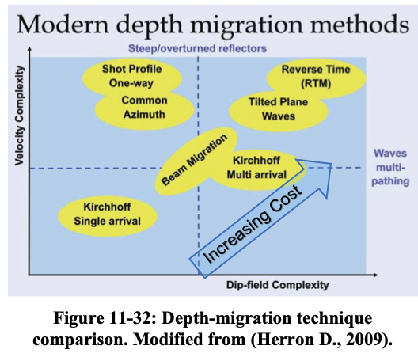
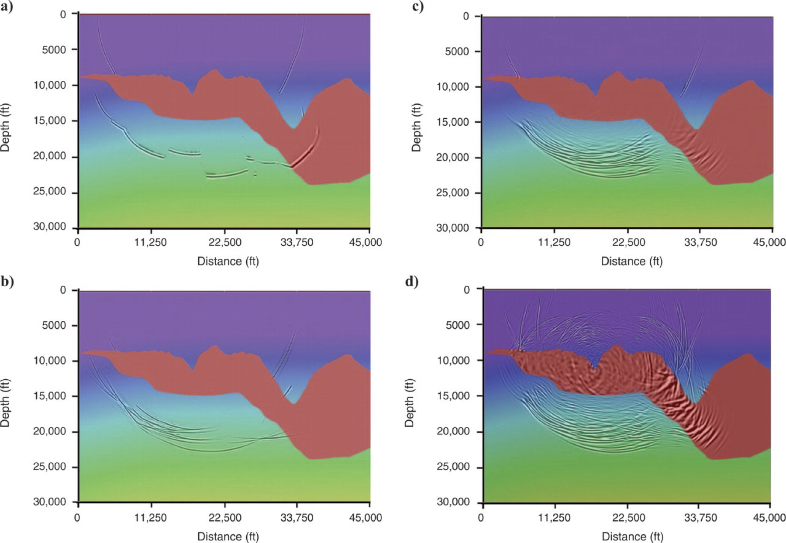
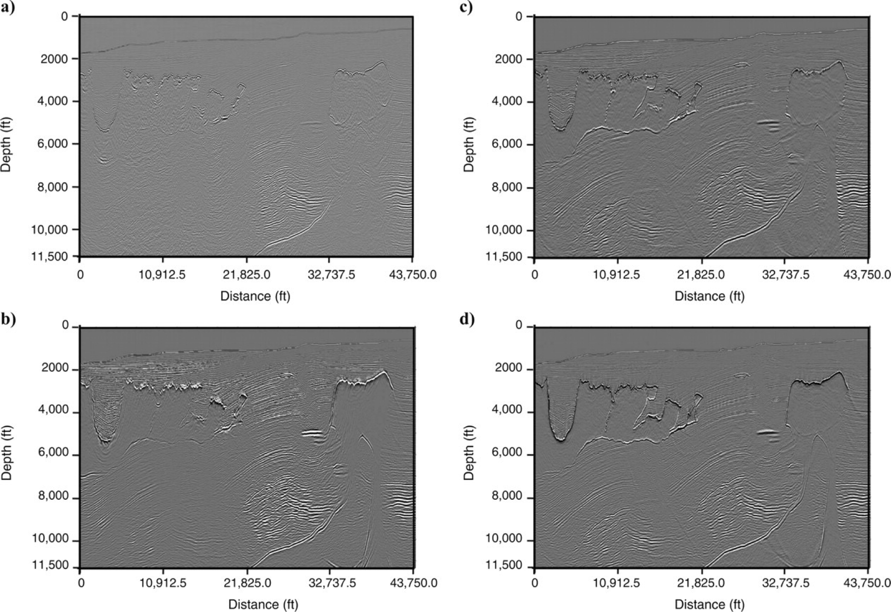
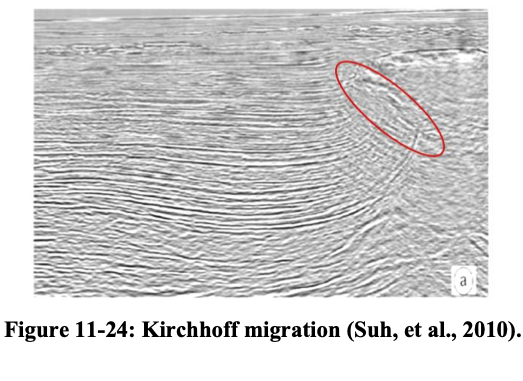
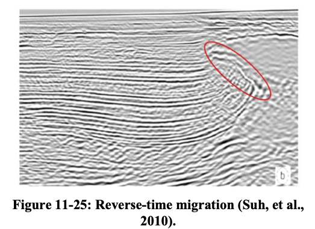
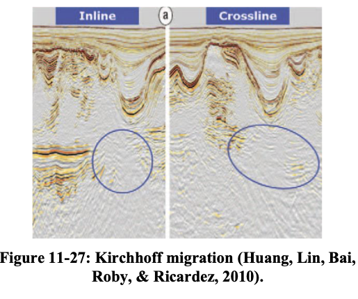
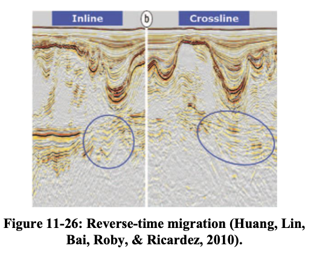
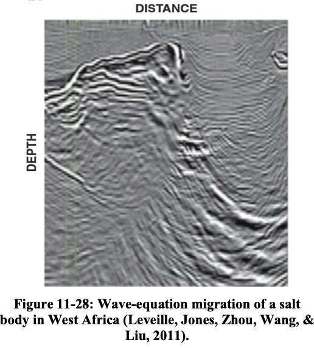
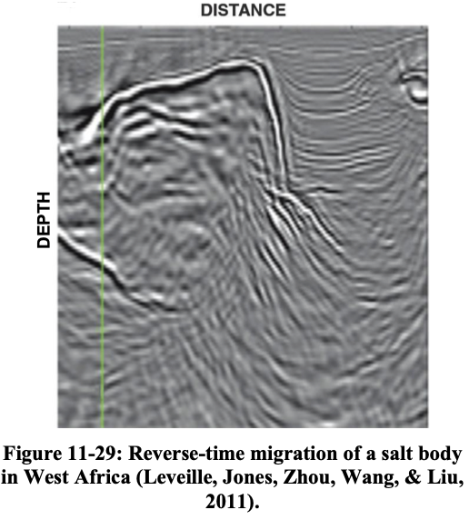
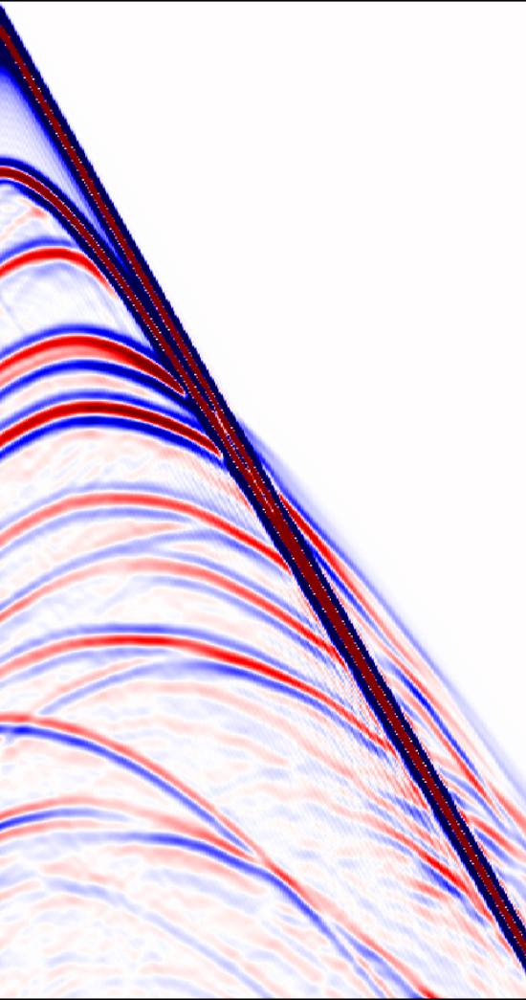

Reverse-Time Migration
RTM via the Discretize-Then-Optimize Approach
Schools of EAS, CSE, ECE — Georgia Institute of Technology
2026-03-02
Motivation
Seismic migration aims to move reflected energy to its true subsurface location. Not all migration methods handle complex geology equally well.
| Method | Pros | Cons |
|---|---|---|
| Kirchhoff | Fast, flexible geometry, parallelizable | Fails with multipathing, poor in complex media |
| Gaussian Beam | Handles multipathing, smooth amplitudes | Limited accuracy in sharp velocity contrasts |
| One-way WEM | Accurate for lateral velocity variations | Cannot image steep dips (>90°), no turning waves |
| RTM | Full wave equation, all dips and turning waves | Computationally expensive, low-frequency artifacts |
Overview different Migration Methods

Overview of migration methods (Hill and Rüger 2020)
Impulse Responses

(a) Kirchhoff migration. (b) Gaussian beam migration. (c) One-way wave-equation migration. (d) Reverse-time migration. As the migration method becomes more accurate, the impulse response becomes more complex. (Etgen, Gray, and Zhang 2009)
Impulse responses for four migration methods on the Sigsbee escarpment model, a common industry migration benchmark (Hill and Rüger 2020).
Impulse Responses
- Kirchhoff: single-valued wavefront (one ray per angle); discontinuous in the presence of large velocity contrasts
- Gaussian Beam: smooth, continuous wavefronts that handle multipathing better than Kirchhoff but with limited resolution at sharp velocity boundaries
- One-way Wave-equation Migration: multi-valued wavefront captures complex wave paths; no internal reflections; smooth, gradational changes instead of discontinuities
- Two-way (RTM): most complex and accurate; includes reflections from salt-sediment interfaces; practitioners suppress these by setting zero reflection coefficients in the density model
Different Migration Methods

Kirchhoff, Gaussian Beam, One-way WEM, and RTM comparison (Etgen, Gray, and Zhang 2009)
- Kirchhoff and Gaussian Beam struggle beneath complex salt bodies
- Gaussian Beam migration provides smoother results than Kirchhoff but still degrades beneath complex salt geometries
- One-way migration improves subsalt imaging but misses steep dips
- RTM produces the most complete and accurate image
Kirchhoff vs. RTM


Kirchhoff migration vs. RTM on a complex salt model (Hill and Rüger 2020).
Kirchhoff vs. RTM cont’d


Kirchhoff vs. RTM — another example (Hill and Rüger 2020).
One-way vs. RTM


One-way WEM vs. RTM (Hill and Rüger 2020).
RTM in words
RTM in four steps (Zhou et al. 2018):
- Forward propagation — propagate the source wavelet forward in time through the velocity model using the two-way wave equation
- Backward propagation — inject the time-reversed recorded data at receiver locations and propagate backward through the same velocity model; stack contributions from all receivers
- Imaging condition — cross-correlate the forward and backward wavefields at every subsurface point; the zero-lag correlation values form the image for each shot
- Post-processing — apply a Laplacian filter to suppress low-frequency artifacts in the stacked RTM image
Outline
- Motivation — RTM as the gradient of an optimization problem
- Discretize first — The wave equation as a matrix system
- The objective — Least-squares misfit in vectors
- The Lagrangian — Constrained optimization with multipliers
- Three partial derivatives — Adjoint equation + gradient via calculus
- What is \(\frac{\partial \mathbf{A}}{\partial m_i}\)? — Anatomy of the key matrix
- RTM algorithm — Putting it together
- From RTM to FWI — Iteration and the Hessian
Tip
This lecture follows the discretize-then-optimize philosophy: we discretize the wave equation first, then apply standard multivariate calculus. No functional analysis, no Fréchet derivatives — just vectors, matrices, and the chain rule.
Philosophy: Two Routes to the Gradient
Optimize-then-discretize
\[ \text{PDE} \;\xrightarrow{\text{variations}}\; \text{continuous gradient} \;\xrightarrow{\text{discretize}}\; \text{code} \]
Discretize-then-optimize
\[ \text{PDE} \;\xrightarrow{\text{discretize}}\; \text{matrix system} \;\xrightarrow{\partial / \partial m_i}\; \text{gradient vector} \]
. . .
Why this route?
Everything is finite-dimensional. The gradient is a vector \(\nabla_{\mathbf{m}} J \in \mathbb{R}^n\), computed via partial derivatives \(\frac{\partial}{\partial m_i}\) — standard multivariate calculus. No mathematical function spaces, no method of variations.
Step 1: Discretize the Wave Equation
Start from the acoustic wave equation \(m(\mathbf{x})\,\partial_{tt} u - \nabla^2 u = q_s\) and discretize on a grid with \(n\) spatial points and \(n_t\) time steps.
Stack the wavefield at all space-time points into a single vector:
\[ \mathbf{u}_s \in \mathbb{R}^{N}, \qquad N = n \times n_t \]
The discretized wave equation becomes:
\[ \boxed{\mathbf{A}(\mathbf{m})\,\mathbf{u}_s = \mathbf{q}_s} \]
Dimensions:
- \(\mathbf{m} \in \mathbb{R}^n\) — squared slowness at each grid point (what we want to find)
- \(\mathbf{A}(\mathbf{m}) \in \mathbb{R}^{N \times N}\) — discrete wave-equation matrix
- \(\mathbf{u}_s \in \mathbb{R}^{N}\) — wavefield vector
- \(\mathbf{q}_s \in \mathbb{R}^{N}\) — source vector
Structure of \(\mathbf{A}(\mathbf{m})\)
The wave equation has two terms: \(m(\mathbf{x})\,\partial_{tt}u\) (mass/inertia) and \(-\nabla^2 u\) (stiffness). After discretization:
\[ \mathbf{A}(\mathbf{m}) = \mathbf{M}(\mathbf{m})\,\mathbf{D}_{tt} - \mathbf{L} \]
- \(\mathbf{D}_{tt} \in \mathbb{R}^{N \times N}\): discrete second time-derivative (finite differences in \(t\))
- \(\mathbf{L} \in \mathbb{R}^{N \times N}\): discrete Laplacian (finite differences in \(\mathbf{x}\)) — does not depend on \(\mathbf{m}\)
- \(\mathbf{M}(\mathbf{m}) \in \mathbb{R}^{N \times N}\): diagonal mass matrix that puts \(m_i\) at every time step for grid point \(i\)
Key observation
Only \(\mathbf{M}(\mathbf{m})\) depends on \(\mathbf{m}\), and it does so linearly. Changing \(m_i\) at one spatial grid point affects a specific diagonal block of \(\mathbf{A}\).
Step 2: The Discrete Objective
A sampling matrix \(\mathbf{P} \in \mathbb{R}^{M \times N}\) (\(M = n_r \times n_t\)) extracts the wavefield at receiver locations:
\[ \mathbf{d}_s^{\text{pred}} = \mathbf{P}\,\mathbf{u}_s = \mathbf{P}\,\mathbf{A}^{-1}(\mathbf{m})\,\mathbf{q}_s \]
Least-squares misfit
\[ \boxed{J(\mathbf{m}) = \frac{1}{2}\sum_{s=1}^{n_s} \left\|\mathbf{P}\,\mathbf{u}_s - \mathbf{d}_s^{\text{obs}}\right\|_2^2} \]
subject to \(\mathbf{A}(\mathbf{m})\,\mathbf{u}_s = \mathbf{q}_s\) for each shot \(s\).
. . .
Goal: compute the gradient vector \(\nabla_{\mathbf{m}} J \in \mathbb{R}^n\), i.e., all \(n\) partial derivatives \(\frac{\partial J}{\partial m_i}\).
The Naïve Approach
Perturb one parameter at a time:
\[ \frac{\partial J}{\partial m_i} \approx \frac{J(\mathbf{m} + \epsilon\,\mathbf{e}_i) - J(\mathbf{m})}{\epsilon} \]
Each perturbation requires re-solving \(\mathbf{A}(\mathbf{m} + \epsilon\,\mathbf{e}_i)\,\mathbf{u}_s = \mathbf{q}_s\) for all shots.
Cost: \(n \times n_s\) PDE solves — one per parameter per shot.
For a model with \(n = 10^6\) grid points and \(n_s = 10^3\) shots, that’s \(10^9\) PDE solves.
This is unaffordable!
We need a way to get all \(n\) partial derivatives from a small, fixed number of PDE solves per shot.
Step 3: The Lagrangian
Introduce a vector of Lagrange multipliers \(\mathbf{v}_s \in \mathbb{R}^N\) for each shot:
\[ \boxed{\mathcal{L}(\mathbf{m}, \{\mathbf{u}_s\}, \{\mathbf{v}_s\}) = \frac{1}{2}\sum_s \|\mathbf{P}\mathbf{u}_s - \mathbf{d}_s^{\text{obs}}\|_2^2 + \sum_s \mathbf{v}_s^\top\!\left(\mathbf{A}(\mathbf{m})\,\mathbf{u}_s - \mathbf{q}_s\right)} \]
This is a scalar-valued function of three groups of variables:
| Variable | Lives in | Meaning |
|---|---|---|
| \(\mathbf{m}\) | \(\mathbb{R}^n\) | model parameters |
| \(\mathbf{u}_s\) | \(\mathbb{R}^N\) | wavefield (one per shot) |
| \(\mathbf{v}_s\) | \(\mathbb{R}^N\) | Lagrange multipliers (one per shot) |
Key property: when the constraint is satisfied (\(\mathbf{A}\mathbf{u}_s = \mathbf{q}_s\)), the second term vanishes and \(\mathcal{L} = J\).
Step 4: Three Sets of Partial Derivatives
At a stationary point of \(\mathcal{L}\), we have \(\nabla_{\mathbf{m}}\mathcal{L} = \nabla_{\mathbf{m}} J\). To find it, we set the partial derivatives of \(\mathcal{L}\) w.r.t. each group of variables to zero.
We will take three derivatives:
| Derivative | What it gives us |
|---|---|
| \(\frac{\partial \mathcal{L}}{\partial \mathbf{v}_s} = \mathbf{0}\) | recovers the forward (state) equation |
| \(\frac{\partial \mathcal{L}}{\partial \mathbf{u}_s} = \mathbf{0}\) | gives the adjoint equation — determines \(\mathbf{v}_s\) |
| \(\frac{\partial \mathcal{L}}{\partial m_i}\) | gives the \(i\)-th component of the gradient |
No variations needed!
These are ordinary partial derivatives of a scalar function w.r.t. vector/scalar variables. Standard multivariate calculus.
Derivative 1: w.r.t. \(\mathbf{v}_s\)
The Lagrangian depends on \(\mathbf{v}_s\) only through \(\mathbf{v}_s^\top(\mathbf{A}\mathbf{u}_s - \mathbf{q}_s)\):
\[ \frac{\partial \mathcal{L}}{\partial \mathbf{v}_s} = \mathbf{A}(\mathbf{m})\,\mathbf{u}_s - \mathbf{q}_s = \mathbf{0} \]
\[ \boxed{\mathbf{A}(\mathbf{m})\,\mathbf{u}_s = \mathbf{q}_s} \]
No surprise — this just says “the wave equation must be satisfied.” It confirms that \(\mathbf{v}_s\) enforces the PDE constraint.
Derivative 2: w.r.t. \(\mathbf{u}_s\) — The adjoint equation
\(\mathcal{L}\) depends on \(\mathbf{u}_s\) through two terms. Take the derivative of each:
From the misfit term \(\frac{1}{2}\|\mathbf{P}\mathbf{u}_s - \mathbf{d}_s^{\text{obs}}\|_2^2\):
\[ \frac{\partial}{\partial \mathbf{u}_s}\left[\frac{1}{2}(\mathbf{P}\mathbf{u}_s - \mathbf{d}_s^{\text{obs}})^\top(\mathbf{P}\mathbf{u}_s - \mathbf{d}_s^{\text{obs}})\right] = \mathbf{P}^\top(\mathbf{P}\mathbf{u}_s - \mathbf{d}_s^{\text{obs}}) \]
From the constraint term \(\mathbf{v}_s^\top \mathbf{A}\mathbf{u}_s\):
\[ \frac{\partial}{\partial \mathbf{u}_s}\left[\mathbf{v}_s^\top \mathbf{A}\mathbf{u}_s\right] = \mathbf{A}^\top \mathbf{v}_s \]
Setting the sum to zero and defining the residual \(\delta\mathbf{d}_s = \mathbf{P}\mathbf{u}_s - \mathbf{d}_s^{\text{obs}}\):
\[ \boxed{\mathbf{A}^\top\!\mathbf{v}_s = -\mathbf{P}^\top\,\delta\mathbf{d}_s} \]
What is \(\mathbf{A}^\top\)?
Recall \(\mathbf{A} = \mathbf{M}(\mathbf{m})\,\mathbf{D}_{tt} - \mathbf{L}\), so
\[ \mathbf{A}^\top = \mathbf{D}_{tt}^\top\,\mathbf{M}(\mathbf{m}) - \mathbf{L}^\top \]
- \(\mathbf{M}(\mathbf{m})\) is diagonal → \(\mathbf{M}^\top = \mathbf{M}\) ✓
- \(\mathbf{L}\) (Laplacian) is symmetric → \(\mathbf{L}^\top = \mathbf{L}\) ✓
- \(\mathbf{D}_{tt}\) (second time derivative): transposing reverses the direction of time—i.e., the matrix transpose = reverse-time propagation
So \(\mathbf{A}^\top\) is the same wave equation, but solved backward in time.
This is the “reverse-time” in RTM!
The matrix transpose is all it takes. No new physics — just linear algebra.
Interpretation of the Adjoint Equation
\(\mathbf{A}^\top\mathbf{v}_s = -\mathbf{P}^\top\delta\mathbf{d}_s\)
Right-hand side \(-\mathbf{P}^\top\delta\mathbf{d}_s\):
- \(\delta\mathbf{d}_s \in \mathbb{R}^M\): data residual (predicted minus observed)
- \(\mathbf{P}^\top\): injects the residual back at receiver locations into the full grid
- The minus sign: we want to minimize the misfit
Operator \(\mathbf{A}^\top\): propagates backward in time.
Solution \(\mathbf{v}_s \in \mathbb{R}^N\): the back-propagated residual wavefield — the data residual sent backward through the Earth model.
Derivative 3: w.r.t. model parameters
The gradient of \(m_i\) -— one component at a time
Now the payoff. Differentiate \(\mathcal{L}\) w.r.t. the \(i\)-th model parameter \(m_i\):
\[ \frac{\partial \mathcal{L}}{\partial m_i} = \frac{\partial}{\partial m_i}\left[\sum_s \mathbf{v}_s^\top \mathbf{A}(\mathbf{m})\,\mathbf{u}_s\right] \]
The misfit term does not depend on \(m_i\) directly (only through \(\mathbf{u}_s\), which we’ve already dealt with). The constraint term gives:
\[ \frac{\partial \mathcal{L}}{\partial m_i} = \sum_s \mathbf{v}_s^\top\,\frac{\partial \mathbf{A}}{\partial m_i}\,\mathbf{u}_s \]
Observation
Each component \([\nabla_{\mathbf{m}} J]_i\) is a scalar: the dot product \(\mathbf{v}_s^\top (\cdots) \mathbf{u}_s\). Stack all \(n\) of them and you get the gradient vector \(\nabla_{\mathbf{m}} J \in \mathbb{R}^n\).
Derivative of the Modeling w.r.t. its parameters?
What is \(\frac{\partial \mathbf{A}}{\partial m_i}\)?
Recall \(\mathbf{A}(\mathbf{m}) = \mathbf{M}(\mathbf{m})\,\mathbf{D}_{tt} - \mathbf{L}\). The Laplacian \(\mathbf{L}\) doesn’t depend on \(\mathbf{m}\), so:
\[ \frac{\partial \mathbf{A}}{\partial m_i} = \frac{\partial \mathbf{M}}{\partial m_i}\,\mathbf{D}_{tt} \]
\(\mathbf{M}(\mathbf{m})\) is diagonal with \(m_i\) repeated along the entries corresponding to grid point \(i\) at each time step.
So \(\frac{\partial \mathbf{M}}{\partial m_i}\) is a very sparse matrix — it has \(n_t\) ones on the diagonal, at the positions corresponding to \((\mathbf{x}_i, t_1), (\mathbf{x}_i, t_2), \ldots, (\mathbf{x}_i, t_{n_t})\), and zeros everywhere else.
Cont’d
Effect: \(\frac{\partial \mathbf{A}}{\partial m_i}\,\mathbf{u}_s\) selects the second time derivative of \(\mathbf{u}_s\) at spatial point \(i\):
\[ \frac{\partial \mathbf{A}}{\partial m_i}\,\mathbf{u}_s = \begin{pmatrix} \vdots \\ 0 \\ \ddot{u}_s(\mathbf{x}_i, t_1) \\ \ddot{u}_s(\mathbf{x}_i, t_2) \\ \vdots \\ \ddot{u}_s(\mathbf{x}_i, t_{n_t}) \\ 0 \\ \vdots \end{pmatrix} \]
Assembling the Gradient
The dot product \(\mathbf{v}_s^\top\,\frac{\partial \mathbf{A}}{\partial m_i}\,\mathbf{u}_s\) selects the time traces at \(\mathbf{x}_i\) and sums their products:
\[ \mathbf{v}_s^\top\,\frac{\partial \mathbf{A}}{\partial m_i}\,\mathbf{u}_s = \sum_{k=1}^{n_t} v_s(\mathbf{x}_i, t_k)\;\ddot{u}_s(\mathbf{x}_i, t_k)\,\Delta t \]
Sum over shots to get the \(i\)-th gradient component:
\[ \boxed{[\nabla_{\mathbf{m}} J]_i = \sum_{s=1}^{n_s}\sum_{k=1}^{n_t} v_s(\mathbf{x}_i, t_k)\;\ddot{u}_s(\mathbf{x}_i, t_k)\,\Delta t} \]
This is the discrete zero-lag cross-correlation of the forward wavefield \(\mathbf{u}_s\) (its second time derivative) and the adjoint wavefield \(\mathbf{v}_s\), evaluated at grid point \(i\).
The Full Gradient Vector
Stack all \(n\) components:
\[ \nabla_{\mathbf{m}} J = \begin{pmatrix} [\nabla_{\mathbf{m}} J]_1 \\ [\nabla_{\mathbf{m}} J]_2 \\ \vdots \\ [\nabla_{\mathbf{m}} J]_n \end{pmatrix} \in \mathbb{R}^n \]
Each entry is the time cross-correlation at one grid point. Together, they form a spatial image — the RTM image.
Key result
The gradient is a vector with \(n\) entries — one per grid point. No ambiguity about scalars vs. functions. This is the RTM image, derived entirely from matrix calculus.
Cost Analysis
For each shot \(s\), the gradient computation requires:
| Step | Operation | Cost |
|---|---|---|
| 1 | Solve \(\mathbf{A}\mathbf{u}_s = \mathbf{q}_s\) (forward) | 1 PDE solve |
| 2 | Compute \(\delta\mathbf{d}_s = \mathbf{P}\mathbf{u}_s - \mathbf{d}_s^{\text{obs}}\) | cheap |
| 3 | Solve \(\mathbf{A}^\top\mathbf{v}_s = -\mathbf{P}^\top\delta\mathbf{d}_s\) (adjoint) | 1 PDE solve |
| 4 | Cross-correlate to get \([\nabla J]_i\) for all \(i\) | cheap |
Total: \(2 \times n_s\) PDE solves for the entire gradient vector.
Compare with the naïve approach: \(n \times n_s\) PDE solves.
For \(n = 10^6\): speedup of 500,000×.
The RTM Algorithm
Recipe for each shot \(s\):
RTM — Discretize-then-optimize version
- Forward solve: \(\mathbf{u}_s = \mathbf{A}^{-1}(\mathbf{m}_0)\,\mathbf{q}_s\) — store \(\mathbf{u}_s\)
- Residual: \(\delta\mathbf{d}_s = \mathbf{P}\,\mathbf{u}_s - \mathbf{d}_s^{\text{obs}}\)
- Adjoint solve: \(\mathbf{v}_s = \mathbf{A}^{-\top}(\mathbf{m}_0)\,(-\mathbf{P}^\top\delta\mathbf{d}_s)\)
- Image (accumulate): \(\text{image}_i \;\mathrel{+}= \sum_k v_s(\mathbf{x}_i,t_k)\,\ddot{u}_s(\mathbf{x}_i,t_k)\,\Delta t\)
After looping over all shots: \(\text{image} = \nabla_{\mathbf{m}} J \in \mathbb{R}^n\).
Physical Intuition
Why cross-correlation finds reflectors?
Forward wavefield \(\mathbf{u}_s\)
- Source energy propagates downward
- “Illuminates” reflectors
- Runs forward in time
Adjoint wavefield \(\mathbf{v}_s\)
- Data residual propagates from receivers
- Focuses energy back to reflectors
- Runs backward in time (via \(\mathbf{A}^\top\))
At reflector locations, both wavefields are simultaneously nonzero at the same times → their time cross-correlation peaks.
At non-reflector locations, the wavefields are out of sync → cross-correlation is small.
Jacobian and its adjoint
The Jacobian (sensitivity matrix) \(\mathbf{J} \in \mathbb{R}^{M \times n}\) maps model perturbations \(\delta\mathbf{m}\) to data perturbations \(\delta\mathbf{d}\):
\[ \delta\mathbf{d}_s = \mathbf{J}_s\,\delta\mathbf{m}, \qquad [\mathbf{J}_s]_{j,i} = \frac{\partial [\mathbf{d}_s]_j}{\partial m_i} \]
- \(\mathbf{J}_s\,\delta\mathbf{m}\) = linearized Born modeling — propagate a source, scatter off \(\delta\mathbf{m}\), record at receivers
- \(\mathbf{J}_s^\top\,\delta\mathbf{d}_s\) = RTM — back-propagate the data residual, cross-correlate with the forward wavefield
The gradient is:
\[ \nabla_{\mathbf{m}} J = \sum_s \mathbf{J}_s^\top\,\delta\mathbf{d}_s \]
RTM is the action of \(\mathbf{J}^\top\) on the data residual — the adjoint of linearized Born scattering.
Connection to FWI: RTM = One Gradient Step of FWI
RTM computes \(\nabla_{\mathbf{m}} J\) once, at a fixed background model \(\mathbf{m}_0\).
FWI iterates:
\[ \mathbf{m}^{(k+1)} = \mathbf{m}^{(k)} - \alpha_k\;\nabla_{\mathbf{m}} J(\mathbf{m}^{(k)}) \]
Each FWI iteration is essentially an RTM — recompute forward and adjoint wavefields in the updated model, cross-correlate, update.
With preconditioning
In practice, FWI uses approximate Hessian information: \[\mathbf{m}^{(k+1)} = \mathbf{m}^{(k)} - \alpha_k\;\mathbf{H}_k^{-1}\;\nabla_{\mathbf{m}} J(\mathbf{m}^{(k)})\] The Hessian corrects for illumination and geometric spreading — things that plain RTM gets wrong.
RTM vs. FWI
| RTM | FWI | |
|---|---|---|
| Iterations | 1 (single gradient) | Many |
| Updates velocity? | No (fixed \(\mathbf{m}_0\)) | Yes |
| Output | Reflectivity image (\(\nabla_{\mathbf{m}} J\)) | Velocity model (\(\mathbf{m}\)) |
| Needs starting model? | Yes (for kinematics) | Yes |
| Cost per iteration | 2 PDE solves/shot | 2 PDE solves/shot |
RTM gives you where reflectors are (image). FWI also gives you what the velocity is (model).
Comparison: Two Routes to the Same Gradient
Discretize-then-optimize vs. optimize-then-discretize:
| This lecture | Other approach | |
|---|---|---|
| Starting point | Matrix system \(\mathbf{A}\mathbf{u} = \mathbf{q}\) | PDE \(A(m)u = q\) |
| Calculus | \(\frac{\partial}{\partial m_i}\) (partial derivatives) | \(\delta_m\) (Fréchet derivative) |
| Gradient type | Vector \(\nabla_{\mathbf{m}} J \in \mathbb{R}^n\) | Function \(\nabla_m J(\mathbf{x})\) |
| Adjoint | Matrix transpose \(\mathbf{A}^\top\) | Adjoint operator \(A^\top\) |
| Advantage | Concrete, no ambiguity | Mesh-independent, elegant |
Both give the same imaging condition: cross-correlate forward and adjoint wavefields, sum over time and shots.
Caveat
The two routes don’t always commute perfectly — discretizing the adjoint PDE may differ slightly from transposing the discrete forward operator. In practice, the discretize-then-optimize route guarantees that your gradient is exactly consistent with your numerical forward solver.
Summary – Key takeaways
Discretize first: write the wave equation as \(\mathbf{A}(\mathbf{m})\mathbf{u}_s = \mathbf{q}_s\) with everything being finite vectors and matrices.
Standard calculus: the gradient \(\nabla_{\mathbf{m}} J \in \mathbb{R}^n\) is computed via partial derivatives \(\frac{\partial \mathcal{L}}{\partial m_i}\) — no variations needed.
Three derivatives of the Lagrangian give: the forward equation, the adjoint equation, and the gradient.
\(\mathbf{A}^\top\) = reverse time: transposing the discrete wave-equation matrix reverses the direction of time propagation.
RTM = one gradient step: the cross-correlation imaging condition emerges from \(\mathbf{v}_s^\top \frac{\partial \mathbf{A}}{\partial m_i}\mathbf{u}_s\).
FWI = iterate: keep computing gradients (RTM images) and updating the model.
Further Reading
- Plessix, R.-É. (2006). A review of the adjoint-state method for computing the gradient of a functional with geophysical applications. Geophysical Journal International, 167(2), 495–503.
- Virieux, J. & Operto, S. (2009). An overview of full-waveform inversion in exploration geophysics. Geophysics, 74(6), WCC1–WCC26.
- Nocedal, J. & Wright, S.J. (2006). Numerical Optimization. Springer. — Ch. 18 on constrained optimization.
References
This lecture was prepared with the assistance of Claude (Anthropic) and validated by Felix J. Herrmann.
This work is licensed under a Creative Commons Attribution-NonCommercial-ShareAlike 4.0 International License.

